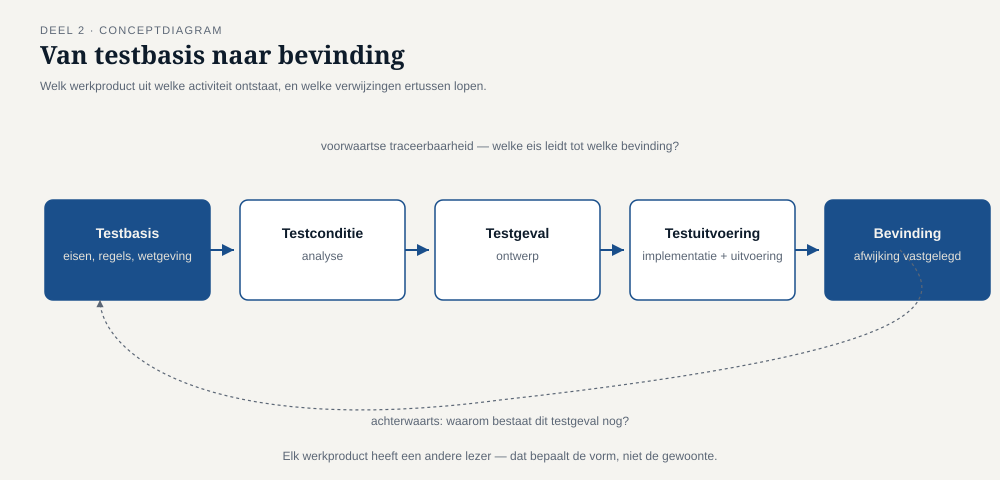

Deel 2 — Het testproces
Reader · Ductus-cursus Testen en Kwaliteitsborging · niveau 1 (fundament) · deel 2 van 30
Dit deel sluit bevinding T1: geen enkel testgeval bij WGP 2.0 verwees naar een eis of regel, waardoor niet vast te stellen was wat er níet was getest.
Leerdoelen
Na dit deel kun je:
- de testactiviteiten benoemen en uitleggen wat elke activiteit oplevert;
- uitleggen waarom testactiviteiten geen fasen zijn en waarom die verwarring schade aanricht;
- de belangrijkste testwerkproducten noemen en per werkproduct aangeven wie de lezer is;
- het begrip testbasis toepassen en beoordelen of een testbasis toetsbaar is;
- traceerbaarheid in beide richtingen uitleggen en toepassen op een concrete testset;
- de rollen testmanagement en testen onderscheiden en de whole-team-benadering plaatsen;
- beargumenteren welke mate van onafhankelijkheid in welke situatie passend is;
- benoemen welke contextfactoren de inrichting van het testproces bepalen.
Studielast: één dagdeel klassikaal, circa drie uur zelfstudie.
1. De vraag die niemand kon beantwoorden
Twee weken na haar aantreden stelde Iris Verweij aan Marijke de Groot een vraag die eenvoudig leek: "Welke eisen zijn met deze 312 testgevallen afgedekt?"
Marijke zocht een uur. Ze vond een testgevallenlijst in een spreadsheet, met kolommen voor nummer, omschrijving, stappen, verwacht resultaat en uitkomst. Wat er niet in stond: waaróm dit testgeval bestond. Nergens een verwijzing naar een hoofdstuk, een eis, een regel, een schermontwerp.
Daarmee was de vraag onbeantwoordbaar. Niet moeilijk — onbeantwoordbaar. Je kunt uit die spreadsheet aflezen wat er getest is. Je kunt er nooit uit afleiden wat er níet getest is, want de verzameling waarmee je zou moeten vergelijken ontbreekt.

Kernzin — Zonder testbasis weet je wat je hebt getest. Met testbasis weet je wat je niet hebt getest. Alleen het tweede is bruikbaar voor een besluit.
Dit is bevinding T1, en dit deel gaat over het proces dat haar voorkomt.
2. De testactiviteiten
Testen bestaat uit een vaste set activiteiten. Ze worden hieronder in een logische volgorde beschreven, maar — en dit is de belangrijkste zin van dit hoofdstuk — het zijn geen fasen. Ze lopen door elkaar, herhalen zich, en vinden in een iteratieve aanpak binnen elke sprint plaats.
2.1 Testplanning
Vaststellen wat het doel van het testen is, welke aanpak daarbij past, welke middelen nodig zijn, en welke criteria bepalen wanneer je stopt. Het resultaat is een testaanpak — al dan niet in een document — waarin ten minste staat: waar we ons zorgen over maken, wat we daaraan gaan doen, en wat we bewust laten liggen.
Planning is niet eenmalig. Bij elke nieuwe informatie (een gevonden cluster afwijkingen, een gewijzigde scope, een uitgelopen bouw) wordt zij bijgesteld.
2.2 Testmonitoring en -beheersing
Doorlopend vergelijken waar je staat met wat je van plan was, en ingrijpen als het afwijkt. Monitoring is meten; beheersing is besluiten. Van beide is bij WGP 2.0 niets terug te vinden: dat zes testgevallen niet uitvoerbaar waren, is gemeten en genoteerd, en er is nooit een besluit over genomen.
2.3 Testanalyse — wat gaan we testen?
De testbasis bestuderen en daaruit testcondities afleiden: de dingen die getoetst moeten worden. Hier vindt ook de belangrijkste vroege opbrengst plaats — bij het analyseren van een testbasis vind je de tegenstrijdigheden, gaten en dubbelzinnigheden erin. Dat is statisch testen; deel 4 gaat erover.
2.4 Testontwerp — hoe gaan we het testen?
Testcondities uitwerken tot testgevallen en de daarbij horende testdata. Hier komen de technieken uit deel 5 en 6 in beeld. Testontwerp beantwoordt ook de vraag waartegen je het waargenomen gedrag vergelijkt: het testorakel. Bij een rekenregel is dat soms een tweede berekening, soms een vastgelegd verwacht resultaat, soms een deskundige. In niveau 3 wordt dit het centrale probleem van de hele cursus.
2.5 Testimplementatie — is alles klaar om te kunnen testen?
Testgevallen ordenen tot uitvoerbare reeksen, testdata klaarzetten, testomgevingen inrichten, automatiseringsscripts bouwen. Onspectaculair werk waar in de praktijk de meeste tijd verdwijnt, en waar bij WGP 2.0 de zes niet-uitvoerbare testgevallen ontstonden: hier bleek de data er niet te zijn, en hier is besloten er niets aan te doen.
2.6 Testuitvoering
Uitvoeren, waarnemen, vergelijken met het verwachte resultaat, verschillen vastleggen. Deel 8 gaat hierover.
2.7 Testafsluiting
Vaststellen wat er is bereikt, restpunten overdragen aan beheer, testware archiveren of opruimen, en — het meest overgeslagen onderdeel — vaststellen wat er is geleerd. Bij WGP 2.0 is de testafsluiting nooit uitgevoerd. Er is een rapport geschreven en het project ging live.

2.8 Waarom "fasen" een schadelijk woord is
Wie de activiteiten als fasen ziet, komt vanzelf uit op de opzet van WGP 2.0: eerst achttien maanden bouwen, dan drie weken testen. Testanalyse vindt dan pas plaats wanneer de testbasis al veertien maanden oud is (bevinding T3), en testontwerp pas als wijzigen van het ontwerp te duur is geworden.
De activiteiten zijn logisch geordend, niet chronologisch. Testanalyse hoort te beginnen zodra er een concept van de testbasis ligt — dus vóór de bouw, niet erna.
3. Testwerkproducten
Elke activiteit levert iets op. Het loont per werkproduct te weten wie de lezer is, want dat bepaalt de vorm.
| Werkproduct | Uit welke activiteit | Wie leest het | Waar het meestal misgaat |
|---|---|---|---|
| Testaanpak / testplan | planning | opdrachtgever, team | geschreven voor het archief in plaats van voor een besluit |
| Voortgangs- en eindrapport | monitoring, afsluiting | opdrachtgever | kleuren in plaats van informatie (bevinding T8) |
| Testcondities | analyse | testers onderling | blijven impliciet, waardoor traceerbaarheid onmogelijk wordt |
| Testgevallen | ontwerp | uitvoerder, later beheer | geen verwijzing naar de testbasis (T1) |
| Testdata | ontwerp, implementatie | uitvoerder | alleen gemakkelijke gevallen (T6) |
| Testomgevingseisen | implementatie | beheer, infrastructuur | ongeschreven, dus onbesproken (T5) |
| Bevindingen | uitvoering | ontwikkelaar, opdrachtgever | onreproduceerbaar opgeschreven; deel 8 |
| Testware-overdracht | afsluiting | beheerorganisatie | gebeurt niet |

4. De testbasis
De testbasis is alles waaruit je kunt afleiden hoe het systeem zich hoort te gedragen: eisen, user stories met acceptatiecriteria, procesmodellen, beslistabellen, wetgeving, contracten, koppelvlakbeschrijvingen, en — vaker dan iemand toegeeft — het bestaande systeem plus de kennis van een collega die er twaalf jaar mee werkt.
4.1 Een testbasis is bijna nooit compleet
Dat is geen uitzondering maar de normale toestand. Eisen zijn onvolledig, verouderd of tegenstrijdig; wat "vanzelfsprekend" is, staat nergens. De vaardigheid is niet klagen over de testbasis maar ermee werken en de gaten expliciet maken.
Drie vragen om een testbasis snel te beoordelen:
- Kun je hier een testgeval uit afleiden? Zo nee, is de eis niet toetsbaar. "Het systeem moet gebruiksvriendelijk zijn" faalt hier; "een werkgever kan een salariswijziging doorgeven in maximaal drie schermen" niet.
- Kun je vaststellen wanneer het fout gaat? Een eis zonder foutgedrag beschrijft alleen het gelukkige pad.
- Spreekt dit ergens anders in de testbasis tegen? Deze vraag had bij WGP 2.0 de hele storing voorkomen (T4).
↗ De business-analysecursus behandelt hoe je zo'n testbasis tot stand brengt en verbetert. Voor deze cursus geldt: de tester is de laatste lezer die de eis nog kan redden vóór hij code wordt.
4.2 Als de testbasis er niet is
Dan is er nog steeds een impliciete testbasis, en die moet je expliciet maken: door te reconstrueren uit gesprekken, door aannames op te schrijven en te laten bevestigen, of door met het bestaande systeem als referentie te werken. Wat je nooit doet, is testen zonder testbasis en dan rapporteren alsof je iets hebt vastgesteld. Dan test je alleen of het systeem doet wat het doet — precies de fout die in de masterproef van deze cursus de hele organisatie in problemen brengt.
5. Traceerbaarheid
5.1 Twee richtingen
Voorwaarts (van testbasis naar test): welke testgevallen dekken deze eis af? Dit beantwoordt de vraag naar dekking, en dus de vraag wat níet is getest.
Achterwaarts (van test naar testbasis): waarom bestaat dit testgeval? Dit beantwoordt de vraag naar relevantie, en maakt het mogelijk een testset op te ruimen wanneer een eis vervalt.

De waarde zit in de lege rijen. Een eis zonder testgeval is een risico dat niemand heeft afgewogen. Een testgeval zonder eis is óf overbodig, óf — interessanter — het bewijs van een eis die nooit is opgeschreven.
5.2 Wat traceerbaarheid oplevert
- Impactbepaling: als deze regel wijzigt, welke tests moeten opnieuw? Zonder traceerbaarheid draai je alles of niets.
- Dekkingsrapportage die betekenis heeft: "vijf van de zeven rekenregels rond terugwerkende kracht zijn beproefd" zegt iets. "306 van de 312 testgevallen geslaagd" niet.
- Onderbouwing richting toezicht en audit. In niveau 3 is dit geen luxe meer maar de kern; ↗ deel 23 en 24.
- Opruimbaarheid van de testset, zodat principe 5 (tests slijten) hanteerbaar blijft.
5.3 Hoe zwaar moet je het aanzetten?
Traceerbaarheid heeft een prijs: elke verwijzing moet worden onderhouden. Een matrix die niemand bijhoudt, is erger dan geen matrix, want hij wekt vertrouwen dat hij niet verdient.
Vuistregel voor niveau 1: traceer op het niveau waarop je een besluit wilt kunnen onderbouwen. Voor een intern rapportagescherm volstaat een verwijzing per user story. Voor de rekenregels rond terugwerkende kracht traceer je per regel. Het risico bepaalt de fijnmazigheid — de doorlopende gedachte die in deel 7 volledig wordt uitgewerkt.
5.4 T1 gesloten
Iris' eerste concrete ingreep bij Meridiaan was klein: in de testgevallenlijst één kolom toevoegen, met de verplichte verwijzing naar een regel of eis. Twee gevolgen, beide binnen een week:
- Zeventien van de bestaande testgevallen bleken nergens naar te verwijzen. Bij navraag: overgenomen uit een oudere lijst, functie inmiddels vervallen.
- Er bleven elf rekenregels over waar geen enkel testgeval naar wees. Vier ervan gingen over terugwerkende kracht.
Punt twee is de opbrengst. Punt één is de bijvangst waar het management enthousiast over wordt, en de tester juist niet.
6. Rollen
6.1 Testmanagement en testen
De ISTQB-lijn onderscheidt twee rollen, die door dezelfde persoon vervuld kunnen worden:
- Testmanagement: verantwoordelijk voor het testproces, de aanpak, de voortgang, de rapportage en het testteam.
- Testen: verantwoordelijk voor analyse, ontwerp, implementatie en uitvoering.
Iris vervult bij Meridiaan beide, wat in kleine organisaties de regel is. Het onderscheid blijft nuttig omdat het twee verschillende soorten fouten benoemt: een testmanagementfout (verkeerde aanpak, verkeerd criterium, verkeerde prioriteit) is duurder en minder zichtbaar dan een testuitvoeringsfout.
6.2 De whole-team-benadering
In teamgerichte werkwijzen is kwaliteit een teamverantwoordelijkheid: ontwikkelaars schrijven eigen tests, de product owner formuleert toetsbare acceptatiecriteria, de tester brengt technieken, systematiek en een andere blik in. Dit is de TMAP-invalshoek en de kern van deel 11.
Wat deze benadering níet betekent: dat testexpertise overbodig is. Een team zonder testvaardigheid schrijft tests op het gelukkige pad — precies de 180 inlog- en navigatiegevallen uit WGP 2.0.
6.3 Onafhankelijkheid
Hoe verder de tester van de maker af staat, hoe groter de kans dat hij aannames ziet die de maker niet ziet — en hoe kleiner zijn kennis van het systeem, en hoe trager de terugkoppeling.
| Mate van onafhankelijkheid | Sterk | Zwak |
|---|---|---|
| De maker test zelf | snel, goedkoop, direct herstel | eigen blinde vlekken blijven |
| Een collega in het team test | andere blik, blijft snel | gedeelde aannames binnen het team |
| Aparte testfunctie | systematiek, andere aannames | trager, risico op wij-zij |
| Externe partij of toezichthouder | onafhankelijk oordeel | duur, traag, weinig domeinkennis |
Er is geen juiste keuze in het algemeen; er is een passende keuze bij een gegeven risico. Bij de invaarberekening in niveau 3 blijkt dat onafhankelijkheid daar geen organisatorische smaakkwestie is maar een harde eis — en dat de manier waarop zij bij Meridiaan was ingevuld, niet standhield.
7. Contextfactoren
Principe 6 uit deel 1 wordt hier concreet. Wat bepaalt hoe je het testproces inricht?
- Wat er misgaat als het misgaat — omkeerbaarheid, aantal getroffenen, geld, toezichtgevolgen. Bij Meridiaan: een verkeerd doorgegeven salaris werkt door in een levenslange aanspraak.
- Ontwikkelaanpak — waterval, iteratief, continu leveren. Bepaalt vooral het ritme, niet het vak.
- Regelgeving — wat moet je kunnen aantonen, en aan wie? ↗ deel 23 en 24.
- Volwassenheid en vaardigheden van de organisatie — dit is de belangrijkste en meest onderschatte factor. Iris kan bij Meridiaan geen testproces invoeren dat drie rollen veronderstelt die niet bestaan.
- Beschikbare tijd en middelen — een randvoorwaarde, geen excuus: minder tijd betekent scherper kiezen, niet minder nauwkeurig zijn.
8. TMAP-lens
Hoe heet dit daar. De activiteiten die hier testproces heten, verschijnen in TMAP als bouwstenen die een cross-functioneel team naar behoefte inzet, niet als een proces dat wordt doorlopen. De testbasis heet daar doorgaans het geheel van afspraken en acceptatiecriteria rond een user story.
Waar het werkelijk anders is. TMAP legt het zwaartepunt bij het team en de continue stroom, en veel minder bij het testplan als document. Traceerbaarheid krijgt daar een andere vorm: niet een matrix, maar de koppeling tussen story, acceptatiecriteria en geautomatiseerde tests in de gereedschapsketen.
Dat verschil is minder groot dan het lijkt. Ook in een backlogtool is de vraag "welke eis is nergens door een test geraakt?" de vraag die telt. Alleen de plek waar het antwoord vandaan komt, verschilt. In een gereguleerde omgeving komt daar één eis bij die TMAP niet zwaar aanzet en die deze cursus wél doorzet: het antwoord moet ook over twee jaar nog reproduceerbaar zijn.
9. Examenaansluiting
Dit deel dekt de testactiviteiten, testwerkproducten, traceerbaarheid tussen testbasis en testwerkproducten, de rollen testmanagement en testen, de whole-team-benadering en onafhankelijkheid (CTFL v4.0, hoofdstuk 1.4 en 1.5). Overwegend K1 en K2, met één K2-leerdoel dat vaak in scenariovorm wordt gevraagd: het benoemen van de waarde van traceerbaarheid.
Twee valkuilen:
- Testcondities en testgevallen worden verwisseld. Een testconditie is wat getoetst wordt ("gedrag bij een salariswijziging met ingangsdatum in het verleden"); een testgeval is hoe, met concrete invoer en verwacht resultaat.
- Testanalyse en testontwerp worden verwisseld. Analyse = wat, ontwerp = hoe. Alle vragen hierover zijn met dat ene zinnetje te beantwoorden.
Deze cursus bereidt voor op het examen en vervangt het officiële examenmateriaal niet. Controleer bij aanvang van een groep de actuele syllabusversie en examenvorm.
10. Kruisverwijzingen
- ↗ Business-analyse: het opstellen en beheren van eisen; toetsbaarheid als kwaliteitseis aan een eis.
- ↗ BPMN/DMN: een beslistabel is een testbasis die vrijwel één-op-één in testgevallen omzet — deel 5 gebruikt dit.
- ↗ Scrum: acceptatiecriteria en definition of done als testbasis, en waar die daarvoor tekortschieten.
- ↗ Software-architectuur: koppelvlakbeschrijvingen als testbasis voor de ketentest in deel 8.
Kernbegrippen
testactiviteiten · testplanning · testmonitoring en -beheersing · testanalyse · testontwerp · testimplementatie · testuitvoering · testafsluiting · testwerkproduct · testbasis · testconditie · testgeval · testorakel · traceerbaarheid (voorwaarts en achterwaarts) · testmanagement · whole-team-benadering · onafhankelijkheid
Samenvatting in vijf zinnen
- De testactiviteiten zijn logisch geordend, niet chronologisch; ze als fasen behandelen levert het WGP 2.0-scenario op.
- De testbasis is alles waaruit volgt hoe het systeem zich hoort te gedragen, en zij is bijna nooit compleet.
- Zonder verwijzing van testgeval naar testbasis kun je wel rapporteren wat je hebt getest, maar nooit wat je niet hebt getest.
- De waarde van een traceerbaarheidsmatrix zit in de lege rijen, en de fijnmazigheid wordt bepaald door risico.
- Onafhankelijkheid is geen deugd op zichzelf maar een keuze die je afstemt op wat er misgaat als het misgaat.